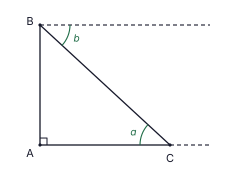
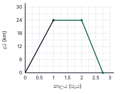
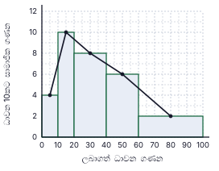
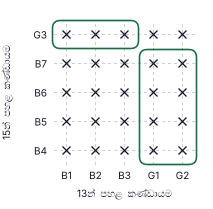
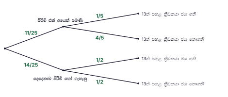

සටහන (ගුරුවරුන් සඳහා): A කොටස: එක් ප්රශ්නයකට ලකුණු 2 (සාමාන්යයෙන් නිවැරදි ක්රමයට ලකුණු 1 ක් ද නිවැරදි පිළිතුරට ලකුණු 1 ක් ද). මුළු ලකුණු 50. B කොටස: එක් ප්රශ්නයකට ලකුණු 10. මුළු ලකුණු 50. සෑම පියවරකටම හිමි ලකුණු දකුණු තීරුවේ දක්වා ඇත. නිවැරදි විකල්ප ක්රමවලට සම්පූර්ණ ලකුණු ලබා දෙන්න. ප්රස්තාර, නිර්මාණ හා ප්රස්තාරයෙන් කියවන අගයන් සඳහා සාධාරණ පරාසයක් පිළිගන්න. A කොටස — පිළිතුරු
1. කම්කරු-දින: 6 × 20 = 120. දින 8කට අවශ්ය කම්කරුවන් = 120 ÷ 8 = 15. අමතර කම්කරුවන් = 15 − 6.
අවසාන පිළිතුර: කම්කරුවන් 9 දෙනෙකු
(ලකුණු 2) 2. E හරහා AB ට සමාන්තර රේඛාවක් අඳින්න. ඒකාන්තර කෝණ: ∠AED හි EA පැත්තේ කොටස = x. එකම පැත්තේ අභ්යන්තර කෝණ (CD ට සමාන්තර රේඛාව සමඟ): අනෙක් කොටස = 180° − 70° = 110°. එනිසා x + 110° = 150°.
අවසාන පිළිතුර: x = 40°
(ලකුණු 2) 3. 1 2x 3 5x 3 10x 5 + 6 − 3 10x
අවසාන පිළිතුර: 8 10x 4 5x
(ලකුණු 2) 4. සෘජු ත්රිකෝණාකාර ප්රිස්මයක මුහුණත් ත්රිකෝණ 2ක් හා සෘජුකෝණාස්ර 3කි (සෘජුකෝණාස්රයක් සමචතුරස්රයක් විය හැක). ත්රපීසියමක් මුහුණතක් විය නොහැක.
අවසාන පිළිතුර: (iii) ත්රපීසියමක් ✓
(ලකුණු 2) 5. 180° ↔ සාමාජිකයන් 36, එනිසා 1° ↔ 36 ÷ 180 = 0.2. ක්ෂේත්ර රැකවරණය: 40° → 40 × 0.2 (= 36 × 40 ÷ 180).
අවසාන පිළිතුර: සාමාජිකයන් 8 දෙනෙකු
(ලකුණු 2) 6. E කුඩා චාපය මත පිහිටන බැවින් ∠ADB = 180° − 130° = 50° (AEBD වෘත්ත චතුරස්රයේ ප්රතිමුඛ කෝණ). DC කේන්ද්රය හරහා යන අතර C යනු AB හි මධ්ය ලක්ෂ්යය බැවින් DC ⟂ AB වන අතර DC මගින් ∠ADB සමච්ඡේදනය වේ. ∠CDB = 50° ÷ 2.
අවසාන පිළිතුර: ∠CDB = 25°
(ලකුණු 2) 7. 3x² − 48 = 3(x² − 16) = 3(x² − 4²)
අවසාන පිළිතුර: 3(x − 4)(x + 4)
(ලකුණු 2) 8. lg 400 = lg (4 × 10²) = lg 4 + 2 = 0.6021 + 2
අවසාන පිළිතුර: 2.6021
(ලකුණු 2) 9. a = ∠ACB, C හිදී CA හා CB අතර ලකුණු කරයි. b = B හරහා ඇති කැඩි තිරස් රේඛාව හා BC අතර කෝණය, B හිදී ලකුණු කරයි. තිරස් රේඛා දෙක සමාන්තර බැවින් a හා b ඒකාන්තර කෝණ වේ.
අවසාන පිළිතුර: a = b (ආරෝහණ කෝණය = අවරෝහණ කෝණය)

(ලකුණු 2) 10. වක්ර පෘෂ්ඨය = 2πr × 5r = 10πr 2 ; පතුල = πr 2 . අනුපාතය = 10πr 2 : πr 2
අවසාන පිළිතුර: 10 : 1
(ලකුණු 2) 11. මුළු ප්රතිඵල = 4 × 4 = 16. එකතුව 10: (3, 7), (5, 5), (7, 3) → ප්රතිඵල 3.
අවසාන පිළිතුර: 3 16
(ලකුණු 2) 12. AB = BD නිසා ∠BDA = ∠DAB = 35°; බාහිර කෝණය ∠DBC = 35° + 35° = 70°. BC = DC නිසා ∠BDC = ∠DBC = 70°. BCD ත්රිකෝණයේ කෝණ: x = 180° − 70° − 70°.
අවසාන පිළිතුර: x = 40°
(ලකුණු 2) 13. A = {2, 3, 5, 7}, B = {3, 6, 9}. A ∩ B = {3} (සත්යයි). A ∪ B = {2, 3, 5, 6, 7, 9} (එනිසා (ii) අසත්යයි). A′ හි අවයව 10 − 4 = 6 කි (එනිසා (iii) අසත්යයි).
අවසාන පිළිතුර: (i) ✓
(ලකුණු 2) 14. 36a6 b4 ÷ 6a3 b2
අවසාන පිළිතුර: 6a3 b2
(ලකුණු 2) 15. පොදු අනුපාතය r = (−20) ÷ (−40) = 1 2 4 = −20 × 1 2 5 = −10 × 1 2
අවසාන පිළිතුර: −5
(ලකුණු 2) 16. ∠BDC = ∠BAC = 26° (එකම ඛණ්ඩයේ කෝණ). BD මගින් ∠ADC සමච්ඡේදනය වන බැවින් ∠ADC = 52°. ∠CBE = ∠ADC (වෘත්ත චතුරස්රයක බාහිර කෝණය අභ්යන්තර ප්රතිමුඛ කෝණයට සමාන වේ).
අවසාන පිළිතුර: ∠CBE = 52°
(ලකුණු 2) 17. සංගුණක 12, 18, 30 හි ම.පො.සා. = 6; a හි අඩුම බලය = a; b හි අඩුම බලය = b2 .
අවසාන පිළිතුර: 6ab2
(ලකුණු 2) 18. ප්රිස්මයේ පරිමාව = 2464 × h . πr 2 h = 2464h ⇒ 22 7 r 2 = 2464 ⇒ r 2 = 2464 × 7 22
අවසාන පිළිතුර: r = 28 cm
(ලකුණු 2) 19. මධ්ය ලක්ෂ්ය ප්රමේයය අනුව DE ∥ BC ද BC = 2 × DE = 24 cm ද වේ. AE² = 5² + 12² = 169, AE = 13 cm, එනිසා EC = AE = 13 cm. DB = AD = 5 cm. පරිමිතිය = DB + BC + CE + ED = 5 + 24 + 13 + 12.
අවසාන පිළිතුර: 54 cm
(ලකුණු 2) 20. අනුක්රමණය = 1 − 7 5 − 2 y − 7 = −2(x − 2) ⇒ y = −2x + 11.
අවසාන පිළිතුර: y = −2x + 11 (හෝ 2x + y = 11)
(ලකුණු 2) 21. ∠DAB = ∠BCD = 70° (සමාන්තරාස්රයක ප්රතිමුඛ කෝණ). ∠DEB = ∠DAB = 70° (එකම ඛණ්ඩයේ කෝණ; A හා E, DB හි එකම පැත්තේ පිහිටයි).
අවසාන පිළිතුර: ∠DEB = 70°
(ලකුණු 2) 22. ආයෝජනය P යැයි ගනිමු: P × 1.04² = 67 600 ⇒ P = 67 600 ÷ 1.0816. (පරීක්ෂාව: 1.04P හි 4% = 2 600 ⇒ 1.04P = 65 000 ⇒ P = 62 500.)
අවසාන පිළිතුර: රු. 62 500
(ලකුණු 2) 23. OA ∥ BD: ∠OBD = ∠AOB = 70° (ඒකාන්තර කෝණ). OB = OD නිසා ∠ODB = 70° ද ∠BOD = 180° − 140° = 40° ද වේ. ∠BED = ½ ∠BOD (කේන්ද්රයේ කෝණය = වෘත්ත පරිධියේ කෝණය මෙන් දෙගුණයකි).
අවසාන පිළිතුර: ∠BED = 20°
(ලකුණු 2) 24. 4x > 3 − 15 ⇒ 4x > −12 ⇒ x > −3. −3 ට වැඩි ඍණ නිඛිල:
අවසාන පිළිතුර: x = −2, −1
(ලකුණු 2) 25. A හරහා ∠BAC සමච්ඡේදකය, චාප දෙකේ ඡේදන ලක්ෂ්යය හරහා අඳින්න. B හිදී, චාප දෙකේ ඡේදන ලක්ෂ්යය හරහා AB ට ලම්බකය අඳින්න. සමච්ඡේදකය හා ලම්බකය හමුවන ලක්ෂ්යය O වේ. රූපයේ O පිහිටන්නේ B ට සිරස්ව ඉහළින්, AB × tan 25° ≈ 0.47 AB උසකිනි.
අවසාන පිළිතුර: O = ∠BAC හි සමච්ඡේදකය හා B හිදී AB ට ලම්බකය හමුවන ලක්ෂ්යය (එක් රේඛාවකට ලකුණු 1)
(ලකුණු 2) B කොටස — පිළිතුරු සහ ලකුණු බෙදීම
ප්රශ්නය 1
(i) 1 − 1 5 4 5 1 (ii) වෙනත් වියදම් = 3 8 4 5 3 10 1 ඉතිරි වන භාගය = 4 5 3 10 1 2 1 (iii) ලැබෙන මුදල = 47 500 ÷ 1 2 1 ඉන්ධන = 1 5 3 10 1 (iv) ලැබෙන මුදලින් රු. 75 000 ඉක්මවන කොටස = 95 000 − 75 000 = රු. 20 000 1 මෙය රු. 75 000 ඉක්මවන ආදායමේ 80% කි (බද්ද 20%): රු. 75 000 ඉක්මවන ආදායම = 20 000 × 100 ÷ 80 = රු. 25 000 1 බද්දට පෙර ආදායම = 75 000 + 25 000 = රු. 100 000 1 (v) ආදායමේ ප්රතිශතයක් ලෙස ඉන්ධන = 19 000 ÷ 100 000 × 100 1 = 19% 1
මුළු ලකුණු: 10
ප්රශ්නය 2
(a)(i) (1, 24) සිට (2, 24) දක්වා තිරස් රේඛාව (පැය 1ක් km 24 හිදී රැඳී සිටී) 1 (2, 24) සිට (2.75, 0) දක්වා සරල රේඛාව, එනම් පැය 2 විනාඩි 45 (කුඩා කොටුවක් දක්වා වෙනසක් පිළිගන්න) 1 (a)(ii) වේගය = දුර ÷ කාලය = 24 ÷ 3 4 1 = 32 km/h 1 (b)(i) අර්ධ වෘත්තාකාර චාපයේ දිග = 1 2 22 7 1 පරිමිතිය = 66 + 33 + 42 + 33 (චාපය + BC + CD + DA) 1 = 174 m 1 (b)(ii) සෘජුකෝණාස්රයේ වර්ගඵලය = 42 × 33 = 1386 m2 1 අර්ධ වෘත්තයේ වර්ගඵලය = 1 2 22 7 2 1 1386 ÷ 693 = 2 (ගුණ 2 ක්) 1
මුළු ලකුණු: 10

සම්පූර්ණ කළ ප්රස්තාරය (එකතු කළ කොටස් කොළ පාටින්) ප්රශ්නය 3
(i) වරිපනම් බද්ද = 120 000 × 15 100 1 = රු. 18 000 1 (ii) වසරේ කුලිය = 15 000 × 12 = රු. 180 000; නඩත්තුව = 180 000 හි 10% = රු. 18 000 1 ඉතිරි මුදල = 180 000 − 18 000 − 18 000 = රු. 144 000 1 (iii)(a) කොටස් ගණන = 12 000 ÷ 6 1 = කොටස් 2 000 1 ආයෝජනය කළ මුළු මුදල = 2 000 × 80 = රු. 160 000 1 (iii)(b) අමතර මුදල = 160 000 − 144 000 1 = රු. 16 000 1 ප්රතිශතය = 16 000 160 000 1
මුළු ලකුණු: 10
ප්රශ්නය 4
ලබාගත් ධාවන ගණන සාමාජික සංඛ්යාව සමුච්චිත සංඛ්යාතය 0 – 10 4 4 10 – 20 10 14 20 – 40 16 30 40 – 60 12 42 60 – 100 8 50

සම්පූර්ණ කළ ජාල රේඛය (කොළ පාටින්) (i) සංඛ්යාතය = උස × පන්ති පළල ÷ 10 (උස යනු ධාවන 10කට සාමාජික සංඛ්යාවයි) 1 10 හා 16 (උස 10, 8 → 10 × 1, 8 × 2) 1 12 හා 8 (උස 6, 2 → 6 × 2, 2 × 4) 1 (ii) නිවැරදි පන්ති පරාස 0–10, 10–20, 20–40, 40–60, 60–100 මත ස්තම්භ (පළල ධාවන 10, 10, 20, 20, 40) 1 උස 4, 10, 8, 6, 2 (ස්තම්භ මුදුන්, පන්ති මධ්ය අගයන්හි ලකුණු කළ ලක්ෂ්යවල උසට සමාන වේ) 1 ස්තම්භ අතර හිඩැස් නැතිව යාබදව, පිළිවෙළට ඇඳ තිබීම 1 (iii) සමුච්චිත සංඛ්යාත 4, 14, 30, 42, 50 (සියල්ල නිවැරදි නම් ලකුණු 2; අඩු අගයන්ගෙන් 2–3ක් නිවැරදි නම් ලකුණු 1) 2 (iv) ධාවන 40 හෝ ඊට වැඩි ගණනක් ලබාගත් සාමාජිකයන් = 12 + 8 = 20 (හෝ 50 − 30) 1 සම්භාවිතාව = 20 50 2 5 1
මුළු ලකුණු: 10
ප්රශ්නය 5
(i) ප්රතිඵල 25 ම X ලකුණෙන් දැක්වීම (25 ම නිවැරදි නම් ලකුණු 2; 20–24ක් නිවැරදි නම් ලකුණු 1) 2 (ii) පිරිමි එක් අයෙක් පමණක් සිටින ප්රතිඵල 11 ම පමණක් වටකරන සංවෘත වක්ර: (G1, G2) සමඟ (B4, B5, B6, B7) = 8 ද (B1, B2, B3) සමඟ G3 = 3 ද (වක්ර එකක් හෝ දෙකක් පිළිගන්න) 1 සුදුසු ප්රතිඵල 11ක්, මුළු ප්රතිඵල 25න් 1 P(පිරිමි එක් අයෙක් පමණි) = 11 25 1 (iii) පළමු ශාඛා: 11 25 14 25 1 “පිරිමි එක් අයෙක් පමණි” ශාඛාවෙන් පසු: 1 5 4 5 1 “දෙදෙනාම පිරිමි හෝ ගැහැනු” ශාඛාවෙන් පසු: 1 2 1 2 1 (iv) P(ජය නොගනී) = 11 25 4 5 14 25 1 2 44 125 7 25 1 = 44 125 35 125 79 125 1
මුළු ලකුණු: 10

නියැදි අවකාශය හා සංවෘත වක්ර 
සම්පූර්ණ කළ රුක් සටහන